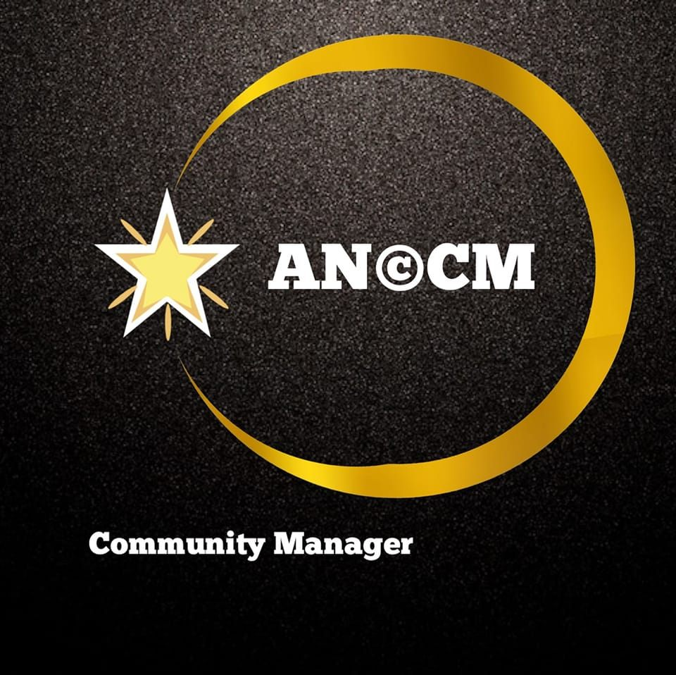
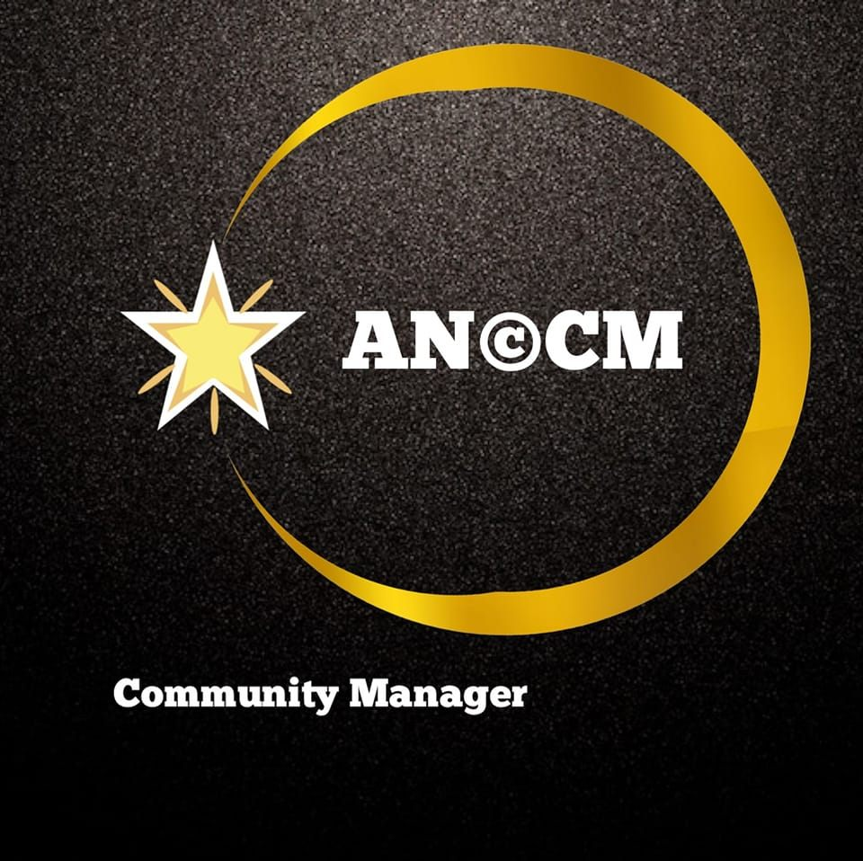

Un exemple d'article
Protégez Vos Biens Précieux avec les Mini GPS Magnétiques : Votre Sécurité Avant Tout Avez-vous déjà ressenti cette angoisse de ne pas savoir où se trouve votre moto ou votre vélo, craignant qu'il ne soit volé à tout moment ? Ou peut-être avez-vous déjà été victime de ce genre de vol et vous souhaitez éviter que cela ne se reproduise ? Ne cherchez pas plus loin, car nous avons la solution pour vous : les mini GPS magnétiques. Retrouvez la Tranquillité d'Esprit Les mini GPS magnétiques sont des dispositifs révolutionnaires qui vous permettent de retracer et de suivre en temps réel la localisation de vos biens précieux à travers votre téléphone portable. Plus besoin de vous inquiéter pour la sécurité de votre moto, de votre vélo ou de tout autre bien qui compte pour vous. Vous pouvez surveiller leur emplacement à tout moment, grâce à une connexion simple à votre GPS. Adieu aux Vols Avec les mini GPS magnétiques, dites adieu aux vols de vélos, de motos et autres biens précieux. Plus jamais vous ne vous réveillerez avec l'amère surprise de constater qu'un voleur a emporté ce qui vous est cher. La technologie de suivi vous permet de réagir rapidement en cas de vol, en fournissant aux autorités les informations nécessaires pour récupérer vos biens. Écoutez en Toute Sécurité Mais ce n'est pas tout. En plus de la sécurité, les mini GPS magnétiques vous offrent une fonctionnalité supplémentaire : vous pouvez écouter les conversations qui se déroulent autour du GPS. Cette fonctionnalité peut s'avérer très utile dans certaines situations, que ce soit pour des raisons de sécurité ou simplement pour rester informé de ce qui se passe autour de vos biens. Le Moment Est Venu Que vous ayez été victime de vols de biens précieux par le passé ou que vous souhaitiez simplement prévenir cette menace, il est temps de vous procurer des mini GPS magnétiques. Ne laissez pas l'incertitude et la peur vous envahir. Protégez ce qui vous est cher et retrouvez votre tranquillité d'esprit grâce à ces dispositifs de suivi innovants. N'attendez pas que le pire se produise. Investissez dans votre sécurité et celle de vos biens avec les mini GPS magnétiques. Prenez le contrôle de votre tranquillité d'esprit dès aujourd'hui. #security #biens


 
